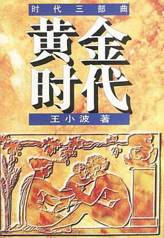
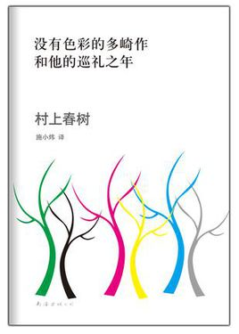
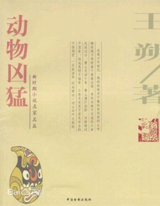
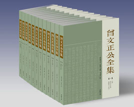

主页
书籍类别
我喜爱的
作者简介
作品延展
附近
关于
欢迎来到bookstudio，这一页主要是介绍一下我比较喜欢的作品信息。
我喜爱的
个人阅读量有限，而且是刚刚起步，希望多指教。

《黄金时代》
是作家王小波创作的中篇小说，是作品系列之“时代三部曲”中的一部作品，该系列入选《亚洲周刊》“二十世纪中文小说一百强”。它主要描述了陈清扬和王二之间的故事，也掺杂了其他王二的奇特生活。

《没有色彩的多崎作和他的巡礼之年》
是村上春树于2013年出版的小说，这是他的突破之作，小说叙述一位36岁铁道工程师多崎作，在女友木元沙罗的鼓励下，决定一个个去拜访年少时集体遗弃他的挚友的旅程。

《动物凶猛》
是2004年在中国电影出版社出版的小说，该书作者是王朔。《阳光灿烂的日子》即根据小说《动物凶猛》改编而来。 故事以“文革”为背景，描写了北京市一个部队大院中一群少年人的成长过程。

《曾文正公全集》
是2011年中国书店出版社出版的图书，作者为曾国藩，本书为晚清一代名臣曾国藩文集，采用最早的、也是目前被认为最为经典的版本，即传忠书局刻本。
名句摘录
天下古今之庸人，皆以一惰字致败； 天下古今之人才，皆以一傲字致败。---曾国藩